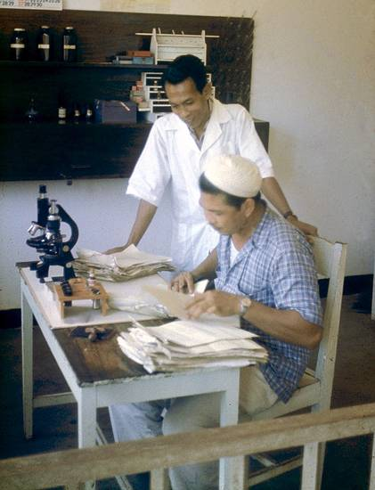

Hadji Saleh im Labor. In meiner Anwesenheit knallte einmal ein Mantri ein "Stück Fleisch" auf den Tisch und wollte wissen, ob's aus dem Oberarm einer Frau oder eines Mannes stammte!

Das weiße Hütchen war damals noch soviel Sozialprestige wert wie der Doktortitel, denn man musste lange sparen, bis man sich die Reise leisten konnte. Da es in den meisten Polikliniken keine Ärzte gab, und selbst im Kreiskrankenhaus nur einen deutschen, wurde der Betrieb von Manteris aufrecht erhalten. Obwohl in Indonesien Frauen in vielen Berufsgruppen vertreten waren, gab es nur wenige weibliche Pflegekräfte, die hauptsächlich als Hebammen in den selbständigen BPIA arbeiteten.